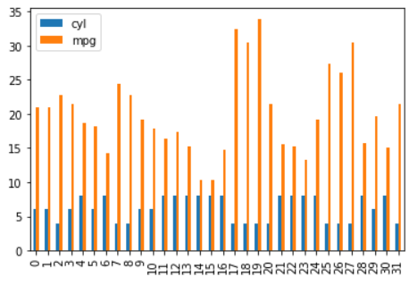
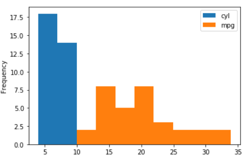
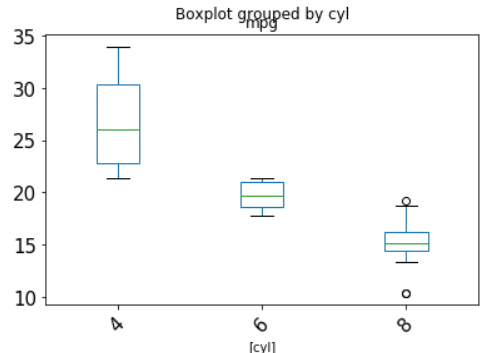
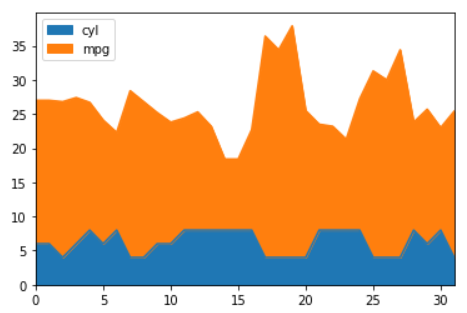
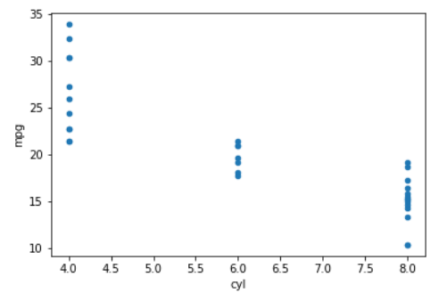
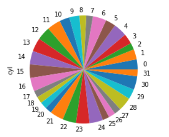

第 12 章 Pandas 进阶¶
本章内容提要:
- 深入 Pandas 数据结构
- 迭代与函数应用
- 数据清洗
- 简单可视化
本书在第 8 章、第 10 章分别向读者介绍了 Pandas 的基本数据结构、操作和导入常见的数据文件，本章的内容将更加深入，除了介绍更多的数据类型，本章还包含函数应用、数据清洗等数据处理的一些核心技能。
12.1 深入 Pandas 数据结构¶
12.1.1 回顾¶
在学习新的知识之前，我们不妨先来回顾和整理一下目前接触到的 Pandas 的数据结构以及它们的联系。
NumPy 数组是 Pandas 数据结构的构成核心，用于存储数据值。我们常用一维和二维的 ndarray。
In [1]: import numpy as np
In [2]: a = np.arange(9)
In [3]: a
Out[3]: array([0, 1, 2, 3, 4, 5, 6, 7, 8])
In [4]: b = np.arange(9).reshape((3, 3))
In [5]: b
Out[5]:
array([[0, 1, 2],
[3, 4, 5],
[6, 7, 8]])
Pandas 的 Series 就是在一维 ndarray 的基础上添加了对数据含义的描述，也就是所谓的索引或标签。与 ndarray 本身所支持的整数索引所不同的是，Pandas 同时支持整数索引和字符索引。
默认情况下整数索引会被使用，而且是一个范围索引对象 RangeIndex，该对象减少了对内存的利用。例如，0-9 即可用起点 0，步长 1，终止点 10 加以表述。更大范围的数值也是如此。
In [6]: import pandas as pd
In [7]: pd.RangeIndex(10)
Out[7]: RangeIndex(start=0, stop=10, step=1)
下面代码确认了 RangeIndex 默认被使用：
In [8]: a_series = pd.Series([5, 7, 9])
In [9]: a_series.index
Out[9]: RangeIndex(start=0, stop=3, step=1)
当然，Pandas 的特色在于对字符索引的支持，字符索引既可以明确数值含义，也建立的映射关系方便数据的访问、修改等操作。
加上字符索引，上面的 Series 摇身一变成为了 3 个用户某个属性的度量值。
In [10]: a_series = pd.Series([5, 7, 9], index = ['user1', 'user2', 'user3'])
In [11]: a_series
Out[11]:
user1 5
user2 7
user3 9
dtype: int64
不妨加上个名字，让含义限定为信用得分。
In [12]: a_series = pd.Series([5, 7, 9], index = ['user1', 'user2', 'user3'], name='credit_score')
In [13]: a_series
Out[13]:
user1 5
user2 7
user3 9
Name: credit_score, dtype: int64
这里 Series 只能表示用户的一种属性，DataFrame 进行了拓展，支持多种属性且不同属性的数据类型可以不同。这完美地与工作中常见的表格数据对应了起来。虽然说数据的主体表现方式是一个矩阵，但与 2 维 ndarray 是完全不同的。
以下代码展示了一个典型的数据框，行一般用于表示独立的记录，如这里的 student；列一般表示记录的相关属性，如这里 student 的 score 和 height。
In [14]: df = pd.DataFrame([[5, 166], [7, 178], [9, 160]],
...: index=['student1', 'student2', 'student3'], columns=['score', 'height'])
In [15]: df
Out[15]:
score height
student1 5 166
student2 7 178
student3 9 160
行索引依旧是使用 index 描述，为了描述不同的列，DataFrame 引入了 column 属性值。这样，两个维度的索引和数据含义的描述对应了起来。
总结一下，Pandas 的数据结构是由 NumPy 数组加上数据描述组成，其中
- Series = 1 维 ndarray + index
- DataFrame = 多个 1 维 ndarray + index + column
这些知识可以归纳为一个比较形象的图形，如图 12-1 所示。

12.1.2 分类变量¶
本小节介绍一个新的数据类型——分类变量。分类有时也称为因子型变量（factor），它用于表示重复的文本列。一些包含有限个元素的列常常会在需要处理的数据中出现，如性别、国家、一些程序描述词（低、中、高）等。分类变量的元素是固定的，如性别只会有男、女。分类变量有时候可能有顺序，如低 < 中 < 高。
看到这里，读者可能心中对分类变量有了一个比较形象的描述：有序的集合。没错，它看起来就是如此。那么分类变量在数据分析时有什么用呢？Pandas 库为什么要提供这样一个数据类型？
- 节省存储——分类变量在存储时是将字符串映射为整数值的，这大大节省了内存的使用。数据越大，效率越高。例如，有 10 万个 one、two、three，分类变量将它们映射为 1、2、3 进行存储，而不是实际的英文字符。
- 分类排序——例如有 3 个分类 one、two、three，我们需要绘制它们的频数条形图。我们可以使用分类变量按照自己的的想法排列这三个分类，控制绘图时它们的排序。
有两种办法可以创建分类变量，一种是在创建 Pandas 的 Series 或 DataFrame 时指定数据类型 dtype 为 category，第二种是直接使用 Pandas 提供的构造器函数 Categorical()。
我们先看第一种办法：
In [16]: pd.Series(['a', 'a', 'b', 'c', 'b'], dtype='category')
Out[16]:
0 a
1 a
2 b
3 c
4 b
dtype: category
Categories (3, object): [a, b, c]
我们对比下不指定该参数值时的结果：
In [17]: pd.Series(['a', 'a', 'b', 'c', 'b'])
Out[17]:
0 a
1 a
2 b
3 c
4 b
dtype: object
两者的差别主要体现在 dtype 上，默认存储字符使用的是 object 类型，当 dtype 指定为 category 后，Pandas 将 5 个字符转换具有 3 个唯一值 [a, b, c] 的类别。也就是说这个生成的 Series 存储的数据是从 [a, b, c] 中重复抽样的结果。
我们再看如何使用第二种方法构造分类变量。
In [2]: pd.Categorical(['a', 'a', 'b', 'c', 'b'])
Out[2]:
[a, a, b, c, b]
Categories (3, object): [a, b, c]
函数文档显示我们可以自定义类别以及是否排序。
pd.Categorical(
values,
categories=None,
ordered=None,
dtype=None,
fastpath=False,
)
我们试一试：
In [6]: pd.Categorical(['a', 'a', 'b', 'c', 'b'], categories=['a', 'c'])
Out[6]:
[a, a, NaN, c, NaN]
Categories (2, object): [a, c]
In [7]: pd.Categorical(['a', 'a', 'b', 'c', 'b'], ordered=True)
Out[7]:
[a, a, b, c, b]
Categories (3, object): [a < b < c]
第一行代码我们指定了合法的类别是 “a” 和 “c”，所以其他的字母都会被转换为 NaN 值。第二行代码的结果显示了不仅有 3 个类别，而且还存在 a < b < c 的顺序关系。
对于分类数据，我们一个常见需求是获取元素的频数或频率，这可以通过 describe() 方法实现。
In [9]: cts = pd.Categorical(['a', 'a', 'b', 'c', 'b'], ordered=True)
In [10]: cts.describe()
Out[10]:
counts freqs
categories
a 2 0.4
b 2 0.4
c 1 0.2
该对象的类别也是有用的，这可能使用对象的属性值 categories 获取。
In [11]: cts.categories
Out[11]: Index(['a', 'b', 'c'], dtype='object')
另外，ordered 属性可以给出对象是否经过排序，返回的是一个布尔值。
In [12]: cts.ordered
Out[12]: True
对分类对象常见的操作有重命名、新增、删除和比较，下面举例介绍。
上面我们看到分类信息存储在对象的 categories 属性中，我们重写该属性即可重命名类别。
In [13]: cts_new = cts.copy()
In [14]: cts_new.categories = ['aa', 'bb', 'cc']
In [15]: cts
Out[15]:
[a, a, b, c, b]
Categories (3, object): [a < b < c]
In [16]: cts_new
Out[16]:
[aa, aa, bb, cc, bb]
Categories (3, object): [aa < bb < cc]
最后的输出显示所有的元素都被替换了，这是一个非常有用的特性。
增加新的类别可以使用 add_categories() 方法实现，新的类别会被添加到最后。
In [17]: cts_new.add_categories(['ff'])
Out[17]:
[aa, aa, bb, cc, bb]
Categories (4, object): [aa < bb < cc < ff]
删除类别后，原有的值会被 NaN 值替代：
In [19]: cts_new.remove_categories("bb")
Out[19]:
[aa, aa, NaN, cc, NaN]
Categories (2, object): [aa < cc]
分类对象的比较在对象是有序时比较有用。
In [23]: cts
Out[23]:
[a, a, b, c, b]
Categories (3, object): [a < b < c]
In [24]: cts2 = pd.Categorical(['b', 'c', 'a', 'a'], ordered=True)
In [25]: cts > cts2
---------------------------------------------------------------------------
ValueError Traceback (most recent call last)
<ipython-input-25-d954cff14835> in <module>
----> 1 cts > cts2
~/miniconda3/lib/python3.7/site-packages/pandas/core/arrays/categorical.py in f(self, other)
113 other_codes = other._codes
114
--> 115 mask = (self._codes == -1) | (other_codes == -1)
116 f = getattr(self._codes, op)
117 ret = f(other_codes)
ValueError: operands could not be broadcast together with shapes (5,) (4,)
In [26]: cts2 = pd.Categorical(['b', 'c', 'a', 'a', 'a'], ordered=True)
In [27]: cts > cts2
Out[27]: array([False, False, True, True, True])
当两个对象都是分类对象时一定要注意长度要一致，并且设定的类别一致。
当其中一个对象是标量时，计算会自动进行广播。
In [28]: cts > 'b'
Out[28]: array([False, False, False, True, False])
读者可以自行尝试其他对比类型的结果。
12.1.3 时间序列¶
数据的生成和采集往往是连续的过程，这离不开时间的累积。 时间序列即是按时间顺序组成的数据序列，它展示了数据变化的趋势、可能的周期性和规律性。 时间序列分析的主要目的是根据已有的历史数据寻找规律、建立模型用来对未来的数据值进行预测。 这种类型的分析常用于金融领域，Pandas 的创建的初始目的就是为了处理金融数据，因此提供 了时间日期对象和丰富的时序分析功能特性。
时间日期¶
Python 的标准库就提供了对日期和时间的支持，如计算当前的时间戳，我们可以使用下面的代码：
In [32]: import time
In [33]: time.time()
Out[33]: 1576340722.0232272
时间戳是以 1970 年 1 月 1 日零点经过了多长时间来表示。
时间戳单位最适于做日期运算。但是 1970 年之前的日期就无法以此表示了。 未来太遥远的日期也不可以，Linux/macOS 和 Windows 系统只支持到 2038 年。
将时间戳传递给 localtime() 函数，我们可以获得更为可读的时间记录。
In [34]: time.localtime(time.time())
Out[34]: time.struct_time(tm_year=2019, tm_mon=12, tm_mday=15, tm_hour=10, tm_min=6, tm_sec=45, tm_wday=6, tm_yda
y=349, tm_isdst=0)
如果想要获得更为简要的时间表示，可以将上述代码传为 asctime() 的参数：
In [36]: time.asctime(time.localtime(time.time()))
Out[36]: 'Sun Dec 15 10:09:29 2019'
时间日期格式化符号¶
上一个代码的结果是按照星期、日期、时间、年份的结果输出的，很多时候我们需要自己格式化时间日期的显示。 因此，了解相关的格式化符号是有必要的，它在所有的时间日期有关的 Python 包或其他编程语言里面都是通用的。
常用的格式化符号汇总如下表。
| 符号 | 含义 |
|---|---|
| %y | 两位数的年份表示（00-99） |
| %Y | 四位数的年份表示（000-9999） |
| %m | 月份（01-12） |
| %d | 月内中的一天（0-31 |
| %H | 24小时制小时数（0-23 |
| %I | 12小时制小时数（01-12） |
| %M | 分钟数（00=59） |
| %S | 秒（00-59） |
| %a | 简化星期名称 |
| %A | 完整星期名称 |
| %b | 简化的月份名称 |
| %B | 完整的月份名称 |
| %c | 本地相应的日期表示和时间表示 |
| %j | 年内的一天（001-366） |
| %p | 本地A.M.或P.M.的等价符 |
| %U | 一年中的星期数（00-53）星期天为星期的开始 |
| %w | 星期（0-6），星期天为星期的开始 |
| %W | 一年中的星期数（00-53）星期一为星期的开始 |
| %x | 本地相应的日期表示 |
| %X | 本地相应的时间表示 |
| %Z | 当前时区的名称 |
| %% | %号本身 |
time 模块提供了 strftime() 函数用于格式化。 下面举一个简单的例子，以年月日时间的顺序输出当前时间日期，该格式是我们平时最常见的格式。
In [37]: time.strftime("%Y-%m-%d %H:%M:%S", time.localtime())
Out[37]: '2019-12-15 10:28:23'
datetime 模块¶
datetime 模块也是 Python 提供的标准库，它在分析中更为常用。 该模块提供了 4 个主要的类用于表示时间日期及其变化。
- time：只包含时、分、秒、微妙等信息
- date：只包含年、月、日、星期等信息
- datetime：包含上述两种信息
- timedelta：表示 datetime 之间差值的类
这里我们仅介绍最常见的时间日期表示，更为详细的内容请读者阅读官方文档。
时间表示一般可以分为本地时间和世界标准时，当然也可以用时间戳，但可读性很差。
In [39]: now = datetime.datetime.now() # 当前本地时间
In [40]: now
Out[40]: datetime.datetime(2019, 12, 15, 10, 34, 54, 516482)
In [41]: utc = datetime.datetime.utcnow() # 当前世界标准时
In [42]: utc
Out[42]: datetime.datetime(2019, 12, 15, 2, 35, 18, 609633)
In [45]: now.timestamp() # 当前时间戳
Out[45]: 1576377294.516482
格式化字符串可以调用 strftime() 方法（注意，在 time 模块中使用的是同名函数）。
In [46]: now.strftime("%Y-%m-%d %H:%M:%S")
Out[46]: '2019-12-15 10:34:54'
时间差也比较常用，直接将两个 datetime 对象相减就可以，返回的是相差的秒数和微秒数。 另外也可以直接通过对应的属性值访问。
In [47]: now2 = datetime.datetime.now()
In [48]: now2 - now
Out[48]: datetime.timedelta(seconds=486, microseconds=231216)
In [49]: td = now2 - now
In [52]: td.seconds
Out[52]: 486
由于 datetime 模块比较好用，Pandas 库直接将其引入作为一个子模块。
下面代码显示了调用 datetime 子模块的 now() 函数得到的是一个 datetime 对象。
In [55]: pd.datetime.now()
Out[55]: datetime.datetime(2019, 12, 15, 10, 47, 58, 642985)
Pandas 日期序列¶
在处理时间日期数据时我们会经常需要生成日期序列以及转换不同的日期频率（季度、月份、周等）， Pandas 库在这方面提供了相关的功能特性。
使用 date_range() 函数可以创建日期序列，默认的频率是天。
In [56]: pd.date_range('20190101', periods=7)
Out[56]:
DatetimeIndex(['2019-01-01', '2019-01-02', '2019-01-03', '2019-01-04',
'2019-01-05', '2019-01-06', '2019-01-07'],
dtype='datetime64[ns]', freq='D')
D 是 Day 的缩写。我们可以更改日期的频率，比如说月份。
In [58]: pd.date_range('20190101', periods=7, freq='M')
Out[58]:
DatetimeIndex(['2019-01-31', '2019-02-28', '2019-03-31', '2019-04-30',
'2019-05-31', '2019-06-30', '2019-07-31'],
dtype='datetime64[ns]', freq='M')
商业分析中常常只使用工作日，这可以使用 bdate_range() 生成序列，它会自动跳过周末。
In [59]: pd.bdate_range('20190101', periods=7)
Out[59]:
DatetimeIndex(['2019-01-01', '2019-01-02', '2019-01-03', '2019-01-04',
'2019-01-07', '2019-01-08', '2019-01-09'],
dtype='datetime64[ns]', freq='B')
此时输出结果显示频率是 B（商业的英文单词首字母）。在生成的序列中，1 月 5 号 和 6 号被自动跳过了。
时间差¶
Pandas 库提供了 Timedelta 类来表示时间差异，相比于 datetime 模块提供的函数， 它更加的灵活和功能丰富。
我们可以直接传入具有描述性的英文语句，它会被 Pandas 自动解析。
In [60]: pd.Timedelta('1 days 2 hours 3 minutes 4 seconds')
Out[60]: Timedelta('1 days 02:03:04')
我们也可以使用整数值，并指定时间差的单位来生成 Timedelta 对象。
In [61]: pd.Timedelta(10, unit='h')
Out[61]: Timedelta('0 days 10:00:00')
我们还可以传入关键字参数表示时间的频率。
In [64]: pd.Timedelta(days=10)
Out[64]: Timedelta('10 days 00:00:00')
In [65]: pd.Timedelta(hours=10)
Out[65]: Timedelta('0 days 10:00:00')
In [66]: pd.Timedelta(minutes=10)
Out[66]: Timedelta('0 days 00:10:00')
Timedelta 对象常用于时间的加减运算中，运算支持自动广播，下面是简单的例子。
In [67]: pd.date_range('20190101', periods=7)
Out[67]:
DatetimeIndex(['2019-01-01', '2019-01-02', '2019-01-03', '2019-01-04',
'2019-01-05', '2019-01-06', '2019-01-07'],
dtype='datetime64[ns]', freq='D')
In [68]: pd.date_range('20190101', periods=7) + pd.Timedelta(hours=10)
Out[68]:
DatetimeIndex(['2019-01-01 10:00:00', '2019-01-02 10:00:00',
'2019-01-03 10:00:00', '2019-01-04 10:00:00',
'2019-01-05 10:00:00', '2019-01-06 10:00:00',
'2019-01-07 10:00:00'],
dtype='datetime64[ns]', freq='D')
In [69]: pd.date_range('20190101', periods=7) - pd.Timedelta(hours=10)
Out[69]:
DatetimeIndex(['2018-12-31 14:00:00', '2019-01-01 14:00:00',
'2019-01-02 14:00:00', '2019-01-03 14:00:00',
'2019-01-04 14:00:00', '2019-01-05 14:00:00',
'2019-01-06 14:00:00'],
dtype='datetime64[ns]', freq='D')
12.2 迭代与函数应用¶
12.2.1 迭代¶
Pandas 对象之间的基本迭代的行为取决于数据类型。 当迭代一个 Series 对象时，它被视为数组，迭代会逐一使用元素值。 而 DataFrame 遵循类似的规则迭代对象的列标签。
我们先分别生成一个 Series 和 DataFrame 对象。
In [74]: s = pd.Series(['a', 'b', 'c'])
In [75]: df = df = {'姓名': ['小明','小王','小张'], '语文':[80,85,90], '数学':[99,88,86]}
In [76]: df = pd.DataFrame(df)
In [77]: s
Out[77]:
0 a
1 b
2 c
dtype: object
In [78]: df
Out[78]:
姓名 语文 数学
0 小明 80 99
1 小王 85 88
2 小张 90 86
用 for 循环迭代两个对象看看结果是否如前面所说。
In [80]: for i in s:
...: print(i)
...:
a
b
c
In [81]: for i in df:
...: print(i)
...:
姓名
语文
数学
的确如此。Series 对象和 DataFrame 对象的 for 循环差别很大。
当我们需要迭代 Series 对象的索引时可以通过 index 属性访问。
In [82]: for i in s.index:
...: print(i)
...:
0
1
2
迭代 DataFrame 的需求常常不只是获取列标签，还有对内容进行迭代。 可以使用的方法有以下 3 种。
- iteritems() - 迭代键值对。
- iterrows() - 将行迭代为索引 Series 对。
- itertuples() - 以命名元组的形式迭代行。
先看看第一个方法：
In [84]: for key, value in df.iteritems():
...: print(key, value)
...:
姓名 0 小明
1 小王
2 小张
Name: 姓名, dtype: object
语文 0 80
1 85
2 90
Name: 语文, dtype: int64
数学 0 99
1 88
2 86
Name: 数学, dtype: int64
In [85]: for key, value in df.iteritems():
...: print(type(value))
...:
<class 'pandas.core.series.Series'>
<class 'pandas.core.series.Series'>
<class 'pandas.core.series.Series'>
iteritems() 方法以 DataFrame 的列标签为键，列值为值进行迭代。 每一个值都是 Series 对象。
我们再来看第二个方法：
In [87]: for key, value in df.iterrows():
...: print(key, value)
...:
0 姓名 小明
语文 80
数学 99
Name: 0, dtype: object
1 姓名 小王
语文 85
数学 88
Name: 1, dtype: object
2 姓名 小张
语文 90
数学 86
Name: 2, dtype: object
In [88]: for row, value in df.iterrows():
...: print(type(value))
...:
<class 'pandas.core.series.Series'>
<class 'pandas.core.series.Series'>
<class 'pandas.core.series.Series'>
iterrows() 方法的结果也是 Series 对象，以 DataFrame 的列标签作为索引。 读者需要注意的是，此时由于每一行是一个 Series 对象，之前 DataFrame 每列 的数据类型会自动强制转换，因此当前每一个 Series 都是字符对象 object。
我们最后看看第三个方法 itertuples()：
In [89]: for key, value in df.itertuples():
...: print(key, value)
...:
---------------------------------------------------------------------------
ValueError Traceback (most recent call last)
<ipython-input-89-6b42ad46ae68> in <module>
----> 1 for key, value in df.itertuples():
2 print(key, value)
3
ValueError: too many values to unpack (expected 2)
In [90]: for value in df.itertuples():
...: print(value)
...:
Pandas(Index=0, 姓名='小明', 语文=80, 数学=99)
Pandas(Index=1, 姓名='小王', 语文=85, 数学=88)
Pandas(Index=2, 姓名='小张', 语文=90, 数学=86)
In [91]: for value in df.itertuples():
...: print(type(value))
...:
<class 'pandas.core.frame.Pandas'>
<class 'pandas.core.frame.Pandas'>
<class 'pandas.core.frame.Pandas'>
当我们使用与前两个方法类似的操作时，程序报错了，原因是该方法生成的每一个元素 都是一个类名为 Pandas 的独立元组。我们可以使用 tuple() 将其转换为 Python 内置 的元组对象。
In [92]: for value in df.itertuples():
...: print(tuple(value))
...:
(0, '小明', 80, 99)
(1, '小王', 85, 88)
(2, '小张', 90, 86)
12.2.2 函数应用¶
针对 DataFrame 对象一般有 3 个不同层面的操作：一是整个 DataFrame， 二是按行或按列，三是每一个元素。如果我们想要将包/库提供的函数 应用到 DataFrame 上，有三个相应的重要方法，它们分别是 pipe()、apply() 和 applymap()。
Series 对象也可以使用，不过此处内容聚焦于 DataFrame 对象的操作。
pipe()¶
pipe() 是表格级别的函数应用，我们先定义一个乘法器。
In [97]: def timer(e1, e2):
...: return(e1*e2)
...:
创建用于示例的 DataFrame 对象：
In [98]: df1 = pd.DataFrame(6*np.random.randn(6, 3), columns=['col1', 'col2', 'col3'])
In [99]: df1
Out[99]:
col1 col2 col3
0 -2.327459 4.391074 8.796776
1 3.736191 2.711543 -11.112365
2 -5.686908 -0.246942 -0.692201
3 4.060646 9.178073 1.355170
4 10.171053 -3.417467 0.447833
5 -7.363384 -0.176782 -6.391243
使用 pipe() 调用该上述定义的乘法器，对 df1 乘以 10。
In [100]: df1.pipe(timer, 10)
Out[100]:
col1 col2 col3
0 -23.274593 43.910736 87.967759
1 37.361914 27.115432 -111.123654
2 -56.869085 -2.469423 -6.922007
3 40.606458 91.780725 13.551700
4 101.710534 -34.174668 4.478325
5 -73.633838 -1.767825 -63.912430
这里 10 自动进行了广播拓展到 df1 相同的大小再进行的运算，传入 pipe() 第二个参数也可以是相同大小的 DataFrame。
In [103]: df1.pipe(timer, pd.DataFrame(6*np.random.randn(6, 3), columns=['col1', 'col2', 'col3']))
Out[103]:
col1 col2 col3
0 5.756520 -26.905602 21.285264
1 20.548535 -10.953445 -99.671865
2 -2.653793 1.188218 2.159359
3 15.746131 225.602231 13.177158
4 95.979467 -1.891072 0.294889
5 14.734334 0.651522 27.829243
pipe() 函数的实用性并不强，由于广播机制的存在，我们完全可以直接 使用运算符达到相同的目的。
In [104]: df1 * 10
Out[104]:
col1 col2 col3
0 -23.274593 43.910736 87.967759
1 37.361914 27.115432 -111.123654
2 -56.869085 -2.469423 -6.922007
3 40.606458 91.780725 13.551700
4 101.710534 -34.174668 4.478325
5 -73.633838 -1.767825 -63.912430
In [105]: df1 * df1
Out[105]:
col1 col2 col3
0 5.417067 19.281527 77.383267
1 13.959126 7.352467 123.484665
2 32.340928 0.060981 0.479142
3 16.488844 84.237015 1.836486
4 103.450327 11.679079 0.200554
5 54.219421 0.031252 40.847987
apply()¶
apply() 是 3 个方法中最常用最实用的，可以对列或行进行函数应用。 默认情况下，apply() 对列进行操作。
还是使用上面的数据和函数，目的也一样，对每列乘以 10。
In [114]: df1.apply(timer, axis=0, e2=10)
Out[114]:
col1 col2 col3
0 -23.274593 43.910736 87.967759
1 37.361914 27.115432 -111.123654
2 -56.869085 -2.469423 -6.922007
3 40.606458 91.780725 13.551700
4 101.710534 -34.174668 4.478325
5 -73.633838 -1.767825 -63.912430
这里 df1 被 apply() 传入为 timer() 函数的第一个参数，第二个参数必须用 关键字参数指定。
我们可以指定 apply() 应用于特定的列或行，实际上此时就是 Series 对象使用 apply()。
例如，我们只操作第 3 列或第 3 行。
In [123]: df1.iloc[:,2].apply(timer, e2=10)
Out[123]:
0 87.967759
1 -111.123654
2 -6.922007
3 13.551700
4 4.478325
5 -63.912430
Name: col3, dtype: float64
In [124]: df1.iloc[2,].apply(timer, e2=10)
Out[124]:
col1 -56.869085
col2 -2.469423
col3 -6.922007
Name: 2, dtype: float64
applymap()¶
applymap() 进行的是元素级别的应用，它也完全可以做到上述 pipe() 的示例结果。
这里我们直接调用匿名函数，更加方便快捷。
In [125]: df1.applymap(lambda x: 10 * x)
Out[125]:
col1 col2 col3
0 -23.274593 43.910736 87.967759
1 37.361914 27.115432 -111.123654
2 -56.869085 -2.469423 -6.922007
3 40.606458 91.780725 13.551700
4 101.710534 -34.174668 4.478325
5 -73.633838 -1.767825 -63.912430
当然这体现不出该方法的优势，applymap() 在对所有元素做选择性操作时才是最有价值的。
例如，我们对 df1 中小于 0 的平方，大于 0 的加 10。
In [126]: df1.applymap(lambda x: x ** 2 if x < 0 else x + 10)
Out[126]:
col1 col2 col3
0 5.417067 14.391074 18.796776
1 13.736191 12.711543 123.484665
2 32.340928 0.060981 0.479142
3 14.060646 19.178073 11.355170
4 20.171053 11.679079 10.447833
5 54.219421 0.031252 40.847987
12.2.3 字符串函数¶
除了数值计算，数据分析常常也处理文本数据，字符串函数在其中作用重大。 Pandas 库为文本数据提供了字符属性，可以方便地利用 Python 内置字符串函数 同名方法进行操作。
本小节将对常见的字符串操作函数进行举例，最后进行表格汇总。
我们先构建一个样例数据。
In [127]: sample_data = pd.Series(['Mike', 'Shixiang', np.nan, '012345', 'HAPPY', 'hurry'])
In [128]: sample_data
Out[128]:
0 Mike
1 Shixiang
2 NaN
3 012345
4 HAPPY
5 hurry
dtype: object
使用字符串方法前需要访问 str 属性。
lower()¶
lower() 方法将所有字母变为小写。
In [129]: sample_data.str.lower()
Out[129]:
0 mike
1 shixiang
2 NaN
3 012345
4 happy
5 hurry
dtype: object
upper()¶
upper() 方法的作用与 lower() 相反。
In [130]: sample_data.str.upper()
Out[130]:
0 MIKE
1 SHIXIANG
2 NaN
3 012345
4 HAPPY
5 HURRY
dtype: object
len()¶
len() 方法获取字符长度。
In [131]: sample_data.str.len()
Out[131]:
0 4.0
1 8.0
2 NaN
3 6.0
4 5.0
5 5.0
dtype: float64
replace()¶
replace() 方法替换字符串。
In [132]: sample_data.str.replace('H', 'YY')
Out[132]:
0 Mike
1 Shixiang
2 NaN
3 012345
4 YYAPPY
5 hurry
dtype: object
count()¶
count() 方法对指定字符进行计数。
In [133]: sample_data.str.count('a')
Out[133]:
0 0.0
1 1.0
2 NaN
3 0.0
4 0.0
5 0.0
dtype: float64
swapcase()¶
swapcase() 方法转换字母大小写。
In [134]: sample_data.str.swapcase()
Out[134]:
0 mIKE
1 sHIXIANG
2 NaN
3 012345
4 happy
5 HURRY
dtype: object
其他的方法不再一一列举，全部都汇总为下表。
| 方法 | 描述 |
|---|---|
lower() |
将Series/Index中的字符串转换为小写 |
upper() |
将Series/Index中的字符串转换为大写 |
len() |
计算字符串长度 |
strip() |
帮助从两侧的系列/索引中的每个字符串中删除空格(包括换行符) |
split(' ') |
用给定的模式拆分每个字符串 |
cat(sep=' ') |
使用给定的分隔符连接系列/索引元素 |
get_dummies() |
返回具有单热编码值的 DataFrame |
contains(pattern) |
如果元素中包含子字符串，则返回每个元素的布尔值True，否则为False |
replace(a,b) |
将字符a替换为值b |
repeat(value) |
重复每个元素指定的次数 |
count(pattern) |
返回模式中每个元素的出现总数 |
startswith(pattern) |
如果系列/索引中的元素以模式开始，则返回true |
endswith(pattern) |
如果系列/索引中的元素以模式结束，则返回true |
find(pattern) |
返回模式第一次出现的位置 |
findall(pattern) |
返回模式的所有出现的列表 |
swapcase() |
变换字母大小写 |
islower() |
检查系列/索引中每个字符串中的所有字符是否小写，返回布尔值 |
isupper() |
检查系列/索引中每个字符串中的所有字符是否大写，返回布尔值 |
isnumeric() |
检查系列/索引中每个字符串中的所有字符是否为数字，返回布尔值 |
12.2.4 分组计算¶
分组计算提供了一种非常强大的汇总技术，它的核心可以分为 3 个步骤： 拆分、应用和合并。
前面的 apply() 函数可以让我们对某列或行进行数值计算，在真实的世界中， 我们可能需要根据表格的某一列分组，然后分别计算每个组别中其他列的汇总值，如和，均值。
Pandas 提供了 groupby() 方法完成上面的需求。
我们看一个来自 Pandas 官方文档的示例，计算不同动物最大速度的均值。
df = pd.DataFrame({'Animal': ['Falcon', 'Falcon',
'Parrot', 'Parrot'],
'Max Speed': [380., 370., 24., 26.]})
In [136]: df
Out[136]:
Animal Max Speed
0 Falcon 380.0
1 Falcon 370.0
2 Parrot 24.0
3 Parrot 26.0
In [137]: df.groupby(['Animal']).mean()
Out[137]:
Max Speed
Animal
Falcon 375.0
Parrot 25.0
虽然数据很简单，但它足以帮助我们理解它的操作方法，其核心步骤描述如下：
- 拆分 - 将 DataFrame 按照 Animal 分为两个子 DataFrame；
- 应用 - 对两个子 DataFrame 的速度列进行均值函数计算得到汇总值；
- 合并 - 将分组计算的结果合并起来。
12.3 数据清洗¶
作为一名数据工作者，我们 80% 的时间不是花在数据的转换和计算上，而是花在数据清洗上。 由于原始数据的来源不一致、数据记录的人力物力投入不平衡、数据存储格式的设计不相同等等 各种原因，数据的缺失、不规整是现实生活中不可避免问题。特别是在当前流行的机器学习 和数据挖掘等领域，质量层次不齐的数据导致模型预测面临严重的准确性和可拓展性问题。
12.3.1 缺失值值处理¶
当数据记录缺失时，一般用 NA（Not Available）值代表，NA 值处理时数据清洗的重点。 由计算引入的 NaN（Not A Number）也可以归入缺失值。
我们先生成一个简单的缺失值数据。
In [138]: df = pd.DataFrame(np.random.randn(4, 4), index = ['user1', 'user2', 'user3', 'user4'], columns=['c
...: ol1', 'col2', 'col3', 'col4'])
In [139]: df
Out[139]:
col1 col2 col3 col4
user1 0.368869 1.021476 -0.771651 -1.908077
user2 0.023887 0.799769 -0.230265 -0.800586
user3 -0.139025 -0.032772 1.078525 -1.453405
user4 -1.042709 1.022162 -0.686548 -1.497647
In [141]: df = df.reindex(['user0', 'user1', 'user2', 'user3', 'user4', 'user5'])
In [142]: df
Out[142]:
col1 col2 col3 col4
user0 NaN NaN NaN NaN
user1 0.368869 1.021476 -0.771651 -1.908077
user2 0.023887 0.799769 -0.230265 -0.800586
user3 -0.139025 -0.032772 1.078525 -1.453405
user4 -1.042709 1.022162 -0.686548 -1.497647
user5 NaN NaN NaN NaN
检查缺失值¶
Pandas 库提供了 isnull() 和 notnull() 函数对缺失值进行检测。
我们既可以检测整个 DataFrame，也可以值关注某一列。
In [143]: df.isnull()
Out[143]:
col1 col2 col3 col4
user0 True True True True
user1 False False False False
user2 False False False False
user3 False False False False
user4 False False False False
user5 True True True True
In [144]: df.col1.isnull()
Out[144]:
user0 True
user1 False
user2 False
user3 False
user4 False
user5 True
Name: col1, dtype: bool
缺失值相关计算¶
当数据存在缺失值时，Pandas 计算时会自动忽略它们。当所有的元素是缺失值时， 结果返回缺失值。注意在求和数据时，缺失值会被当做 0 处理。
In [145]: df.sum()
Out[145]:
col1 -0.788979
col2 2.810636
col3 -0.609939
col4 -5.659715
dtype: float64
In [146]: pd.Series([np.nan, np.nan]).sum()
Out[146]: 0.0
In [147]: pd.Series([np.nan, np.nan]).mean()
Out[147]: nan
填充缺失值¶
Pandas 库提供了诸多方法用于清除缺失值。其中，fillna() 函数可以通过集中方法 填充缺失值，下面举例介绍。
最常见的策略是用一个标量填充缺失值，如果没有特别的需求，一般可以设为 0。
In [148]: df.fillna(0)
Out[148]:
col1 col2 col3 col4
user0 0.000000 0.000000 0.000000 0.000000
user1 0.368869 1.021476 -0.771651 -1.908077
user2 0.023887 0.799769 -0.230265 -0.800586
user3 -0.139025 -0.032772 1.078525 -1.453405
user4 -1.042709 1.022162 -0.686548 -1.497647
user5 0.000000 0.000000 0.000000 0.000000
还可以设定缺失值根据前后的数据进行填充，分为向前和向后两种。
In [150]: df.fillna(method='pad') # 向前填充
Out[150]:
col1 col2 col3 col4
user0 NaN NaN NaN NaN
user1 0.368869 1.021476 -0.771651 -1.908077
user2 0.023887 0.799769 -0.230265 -0.800586
user3 -0.139025 -0.032772 1.078525 -1.453405
user4 -1.042709 1.022162 -0.686548 -1.497647
user5 -1.042709 1.022162 -0.686548 -1.497647
In [151]: df.fillna(method='backfill') # 向后填充
Out[151]:
col1 col2 col3 col4
user0 0.368869 1.021476 -0.771651 -1.908077
user1 0.368869 1.021476 -0.771651 -1.908077
user2 0.023887 0.799769 -0.230265 -0.800586
user3 -0.139025 -0.032772 1.078525 -1.453405
user4 -1.042709 1.022162 -0.686548 -1.497647
user5 NaN NaN NaN NaN
含缺失值的数据提供的是不完整的信息，在样本较多时可以考虑直接舍弃。
使用 dropna() 方法可以直接去掉含缺失值的行或列，默认是行。
In [152]: df.dropna()
Out[152]:
col1 col2 col3 col4
user1 0.368869 1.021476 -0.771651 -1.908077
user2 0.023887 0.799769 -0.230265 -0.800586
user3 -0.139025 -0.032772 1.078525 -1.453405
user4 -1.042709 1.022162 -0.686548 -1.497647
如果按列去除，df 就没有可以用的数据了。
In [153]: df.dropna(axis=1)
Out[153]:
Empty DataFrame
Columns: []
Index: [user0, user1, user2, user3, user4, user5]
12.3.2 连接¶
最后用于汇报或者绘图的数据可能来自多个数据表格，我们有时需要将它们合并到一起， 称为连接。Pandas 库提供了 merge() 函数用于 DataFrame 的连接。
连接操作一般是根据键进行的，键是两个数据表格共有的列。按键连接根据键的多少 可以分为单键连接和多键连接。连接操作与 SQL 操作极为相似。
无论多少个键的连接、不同类型的连接都是使用 merge() 函数，只是参数设定不同。 merge() 函数的参数列表显示如下：
pd.merge(
left,
right,
how='inner',
on=None,
left_on=None,
right_on=None,
left_index=False,
right_index=False,
sort=False,
suffixes=('_x', '_y'),
copy=True,
indicator=False,
validate=None,
)
我们接着构建用于连接的两个数据框，一个 DataFrame 存储故事的 id 的名字， 一个 DataFrame 存储故事所属的 subject 和故事评分。
In [155]: stories = pd.DataFrame({'story_id':[1,2,3], 'title':['lions', 'tigers', 'bears']})
In [156]: data = pd.DataFrame({'subject':[1,2,1,2], 'story_id':[1,2,5,6], 'rating':[6.7, 7.8, 3.2, 9.0]})
In [157]: stories
Out[157]:
story_id title
0 1 lions
1 2 tigers
2 3 bears
In [158]: data
Out[158]:
subject story_id rating
0 1 1 6.7
1 2 2 7.8
2 1 5 3.2
3 2 6 9.0
接下来根据不同的需求分别介绍连接操作。
左连接¶
连接的 DataFrame 根据参数的顺序按 left 和 right 区分。 按左连接（left join）操作合并之后显示 left 的所有行。
连接的方式由 how 参数控制，用于连接的列名由 on 参数指定。
In [159]: pd.merge(stories, data, how='left', on='story_id')
Out[159]:
story_id title subject rating
0 1 lions 1.0 6.7
1 2 tigers 2.0 7.8
2 3 bears NaN NaN
连接后不存在的数值将以 NaN 填充。
右连接¶
在理解左连接后，理解其他的操作就比较简单了。 右连接（right join）操作合并之后显示 right 的所有行。 其实这与对调输入的两个 DataFrame 的左连接结果一致。
In [160]: pd.merge(stories, data, how='right', on='story_id')
Out[160]:
story_id title subject rating
0 1 lions 1 6.7
1 2 tigers 2 7.8
2 5 NaN 1 3.2
3 6 NaN 2 9.0
In [161]: pd.merge(data, stories, how='left', on='story_id')
Out[161]:
subject story_id rating title
0 1 1 6.7 lions
1 2 2 7.8 tigers
2 1 5 3.2 NaN
3 2 6 9.0 NaN
虽然结果一致，但结果显示两种操作的列名顺序有些不同。
外连接¶
外连接（outer join）操作也可以看作取并集，它会合并 left 和 right 所有的行。
In [162]: pd.merge(stories, data, how='outer', on='story_id')
Out[162]:
story_id title subject rating
0 1 lions 1.0 6.7
1 2 tigers 2.0 7.8
2 3 bears NaN NaN
3 5 NaN 1.0 3.2
4 6 NaN 2.0 9.0
内连接¶
内连接（inner join）操作也可以看作取交集，它会合并 left 和 right 共有的行。
In [163]: pd.merge(stories, data, how='inner', on='story_id')
Out[163]:
story_id title subject rating
0 1 lions 1 6.7
1 2 tigers 2 7.8
上述所说的共有是指用于连接的键的共有值，如 stories 和 data 的 story_id 共有 的值是 1 和 2。
多键连接¶
多键连接难度也不大，以列表形式指定 on 参数为两个 DataFrame 共有的列名即可。
In [168]: data2 = pd.merge(stories, data, how='inner', on='story_id')
In [169]: data
Out[169]:
subject story_id rating
0 1 1 6.7
1 2 2 7.8
2 1 5 3.2
3 2 6 9.0
In [170]: pd.merge(data2, data, how='inner', on=['story_id', 'subject'])
Out[170]:
story_id title subject rating_x rating_y
0 1 lions 1 6.7 6.7
1 2 tigers 2 7.8 7.8
如果两个 DataFrame 除了作为键的列之外还有同名列，合并后会被自动 添加 x 和 y 后缀以示区别。
12.3.3 级联¶
除了通过键将 DataFrame 以列的形式连接到一起，还有级联的方式可以合并 DataFrame。 级联操作使用 concat() 函数实现，它可以将多个 DataFrame 按行（默认）或按列组合。
In [171]: data = pd.DataFrame({'subject':[1,2,1,2], 'story_id':[1,2,5,6], 'rating':[6.7, 7.8, 3.2, 9.0]})
In [172]: data2 = pd.DataFrame({'subject':[1,2], 'story_id':[3, 4], 'rating':[5, 9.7]})
In [173]: data
Out[173]:
subject story_id rating
0 1 1 6.7
1 2 2 7.8
2 1 5 3.2
3 2 6 9.0
In [174]: data2
Out[174]:
subject story_id rating
0 1 3 5.0
1 2 4 9.7
上述代码生成了两个列名一致的 DataFrame，接下来我们将它们按行组合起来。
In [175]: pd.concat([data, data2])
Out[175]:
subject story_id rating
0 1 1 6.7
1 2 2 7.8
2 1 5 3.2
3 2 6 9.0
0 1 3 5.0
1 2 4 9.7
怎么样，简单吧？
有时我们可能想要标定行的数据来源，这可以使用键实现。
In [176]: pd.concat([data, data2], keys=['data', 'data2'])
Out[176]:
subject story_id rating
data 0 1 1 6.7
1 2 2 7.8
2 1 5 3.2
3 2 6 9.0
data2 0 1 3 5.0
1 2 4 9.7
仔细观察读者不难发现 index 中的 0 和 1 重复了，指定 ignore_index 选项 可以变成连续的 index。不过此操作后 keys 的设定将不起作用了。
In [177]: pd.concat([data, data2], keys=['data', 'data2'], ignore_index=True)
Out[177]:
subject story_id rating
0 1 1 6.7
1 2 2 7.8
2 1 5 3.2
3 2 6 9.0
4 1 3 5.0
5 2 4 9.7
In [178]: pd.concat([data, data2], ignore_index=True)
Out[178]:
subject story_id rating
0 1 1 6.7
1 2 2 7.8
2 1 5 3.2
3 2 6 9.0
4 1 3 5.0
5 2 4 9.7
我们再试试按列合并：
In [180]: pd.concat([data, data2], axis=1)
Out[180]:
subject story_id rating subject story_id rating
0 1 1 6.7 1.0 3.0 5.0
1 2 2 7.8 2.0 4.0 9.7
2 1 5 3.2 NaN NaN NaN
3 2 6 9.0 NaN NaN NaN
缺少的行会使用 NaN 自动填充。指定 ignore_index 后，所有列索引将重新生成。
In [181]: pd.concat([data, data2], ignore_index=True, axis=1)
Out[181]:
0 1 2 3 4 5
0 1 1 6.7 1.0 3.0 5.0
1 2 2 7.8 2.0 4.0 9.7
2 1 5 3.2 NaN NaN NaN
3 2 6 9.0 NaN NaN NaN
除了 concat() 函数，append() 方法也可以用于行的合并。
In [182]: data.append(data2)
Out[182]:
subject story_id rating
0 1 1 6.7
1 2 2 7.8
2 1 5 3.2
3 2 6 9.0
0 1 3 5.0
1 2 4 9.7
不过它的最大用处在于添加新的行，如给 DataFrame 添加 Series 对象。
In [185]: data.append(pd.Series({'subject':1, 'story_id':10, 'rating':7}, name=6))
Out[185]:
subject story_id rating
0 1 1 6.7
1 2 2 7.8
2 1 5 3.2
3 2 6 9.0
6 1 10 7.0
12.4 Pandas 可视化¶
Pandas 为 Series 和 DataFrame 对象提供了 Matplotlib 库 plot() 函数的简单包装实现， 本节进行简单的介绍。
我们先导入示例数据集 mtcars，它是美国 Motor Trend 收集 的 1973 到 1974 年期间总共 32 辆汽车的 11 个指标， 包含油耗、设计、性能等方面。
In [187]: mtcars = pd.read_csv('files/chapter10/mtcars.csv')
In [188]: mtcars.describe()
Out[188]:
mpg cyl disp ... am gear carb
count 32.000000 32.000000 32.000000 ... 32.000000 32.000000 32.0000
mean 20.090625 6.187500 230.721875 ... 0.406250 3.687500 2.8125
std 6.026948 1.785922 123.938694 ... 0.498991 0.737804 1.6152
min 10.400000 4.000000 71.100000 ... 0.000000 3.000000 1.0000
25% 15.425000 4.000000 120.825000 ... 0.000000 3.000000 2.0000
50% 19.200000 6.000000 196.300000 ... 0.000000 4.000000 2.0000
75% 22.800000 8.000000 326.000000 ... 1.000000 4.000000 4.0000
max 33.900000 8.000000 472.000000 ... 1.000000 5.000000 8.0000
[8 rows x 11 columns]
In [189]: mtcars.shape
Out[189]: (32, 11)
mtcars 所有列中 mpg 是每百公里油耗，cyl 是发动机汽缸数。下面我们就使用这两列进行可视化分析。
In [193]: df = mtcars.loc[:, ['cyl', 'mpg']]
In [194]: df.head()
Out[194]:
cyl mpg
0 6 21.0
1 6 21.0
2 4 22.8
3 6 21.4
4 8 18.7
In [195]: %matplotlib inline
In [196]: df.plot()

默认情况下，plot() 方法使用线图形式进行绘制。如果想要绘制其他的图形类型，我们可以使用关键字参数 kind 进行指定。
- bar - 条形图
- barh - 横条形图
- hist - 直方图
- box - 箱线图
- area - 面积图
- scatter 散点图
12.4.1 条形图¶
条形图利用条形的高度来表示数值，此处我们有 32 辆汽车的数据，所以会有 32 组条形。
df.plot(kind='bar')

使用 barh 来调换 x 和 y 轴。
df.plot(kind='barh')

我们可能想将图形堆叠起来，可以指定 stacked 为 True。
df.plot(kind='bar', stacked=True)

图中 x 轴显示的是数值，没有特别的含义，我们给数据加上标签，让它显示出来。
df2 = df.copy()
df2.index = ['car '+str(i) for i in np.arange(32) + 1]
df2.plot(kind='bar', stacked=True)
12.4.2 直方图¶
直方图可以比较直观展示数据分布，是初步了解数据的最好方式之一。
df.plot(kind='hist')

通过指定 bins 选项，我们可以修改 bin 的宽度。
df.plot(kind='hist', bins=20)

上面将两个变量的分布绘制在了一个图中，我们还可以直接调用 hist() 方法为每一个变量单独绘制直方图。
df.hist(bins=20)

12.4.3 箱线图¶
上面的直方图显示了气缸数是 3 个离散值 4、6、8。我们可能更加想要比较不同组别之间油耗的差异，这种情况下箱线图是很好的展示方式。
不过 plot() 方法绘制箱线图时默认是为每列单独绘制，无法进行分组。
df.plot(kind='box')

为了将油耗按照气缸数分组后绘制箱线图，可以直接使用 boxplot() 方法，它支持更多的绘图参数。例如，通过 by 参数指定进行分组的列名。
# 为了优化显示效果，我们进行了 3 项自定义：
# 去掉网格线
# 旋转 x 轴标签
# 增大字体
df.boxplot(by='cyl', grid=False, rot=45, fontsize=15)

12.4.4 面积图¶
面积图的效果有点类似堆叠条形图，前者更适用于连续变量，后者更适用于离散变量。
df.plot(kind='area')

12.4.5 散点图¶
散点图可以更加直观地观测单个数据点的情况。这里变量 cyl 是离散值，所以下面绘制的图形可能看起来有点奇怪。不过，有时候这种表现形式可能带来意想不到的效果。
df.plot(kind='scatter', x='cyl', y='mpg')

12.4.6 饼图¶
饼图可以显示数据的占比情况，一般是使用一列的数据，即一个 Series 对象。下面代码提取了 cyl 变量并进行了可视化。
df.cyl.plot(kind='pie')

当需要可视化多列，即一个 DataFrame 对象时，我们需要指定 subplots 为 True。
下面代码提取了 df 前 5 行的数据用于可视化。
df.head(5).plot(kind='pie', subplots=True)

12.5 章末小结¶
Pandas 库作为 Python 进行数据分析的灵魂工具，提供了一系列数据类型、结构、函数、方法 和可视化特性。本章首先在第 8 章的基础上进行了总结回顾，并对其他一些数据类型进行了拓展。 然后本章对函数应用和 DataFrame 的迭代计算进行了比较详细的介绍，包括按行和按列等不同的 方式。分组计算是非常好的技术，推荐读者多多练习和使用。后面介绍的缺失值内容读者按照自己的 需求进行掌握，一般情况下通过 dropna() 去掉缺失值数据即可。DataFrame 的连接和级联合并是 非常核心的知识，它与数据库操作非常类似，掌握它们会帮助读者更好地理解和操作数据。可视化 是查看数据分布、进行比较的绝佳方案，Pandas 库基于 Matplotlib 库封装的绘图函数简单易用。 虽然本书使用了两个章节的内容介绍 Pandas 库，但仍有许多未能涵盖的知识点，读者不妨参阅 Pandas 文档和相关技术书籍进行进一步学习。